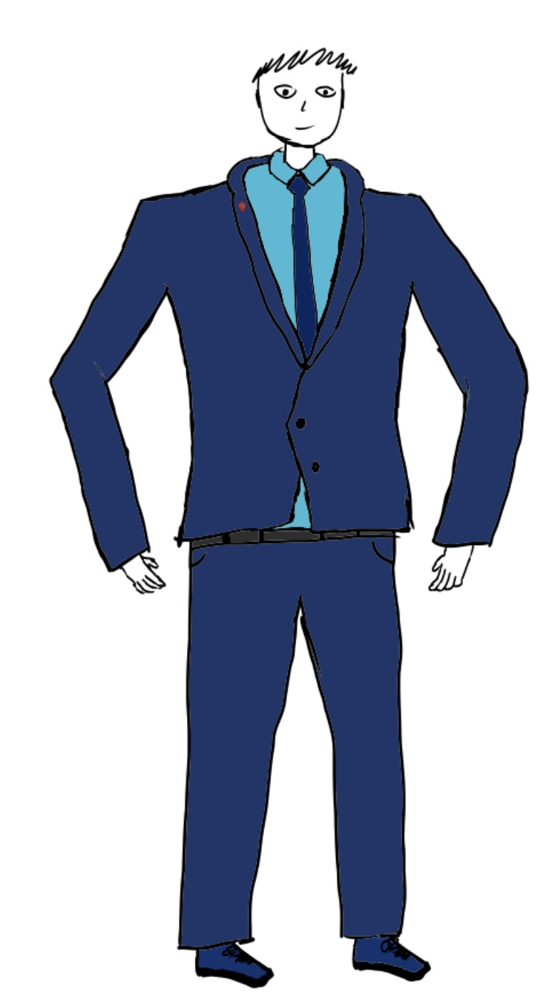
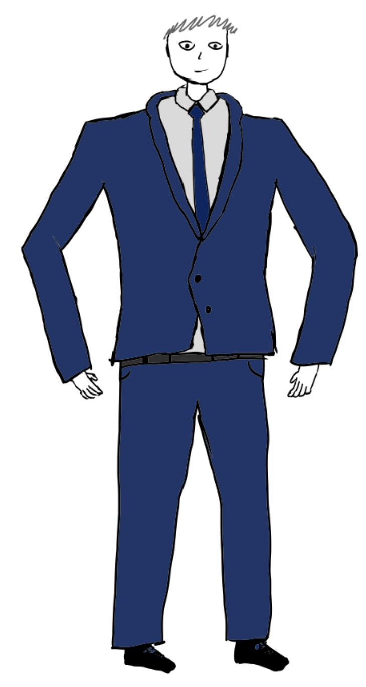

Stroj szkolny ŚLTZN
Stroje szkolne dla uczniów i nauczycieli

Stroj ucznia
Na codzień błękitna koszula, granatowe spodnie, marynarka oraz obowiązkowo tarcza szkoły. Na specjalne okazje biała koszula. Buty eleganckie, czarne, niebieskie lub brązowe. Dziewnczyny mogą nosić granatową spódnicę i białą bluzkę.

Stroj nauczyciela
Nie ma określonego stroju dla nauczycieli, ale większość z nich nosi eleganckie ubrania, takie jak koszule, spodnie i marynarki, bądź sportowy ubiór w przypadku nauczycieli wychowania fizycznego.